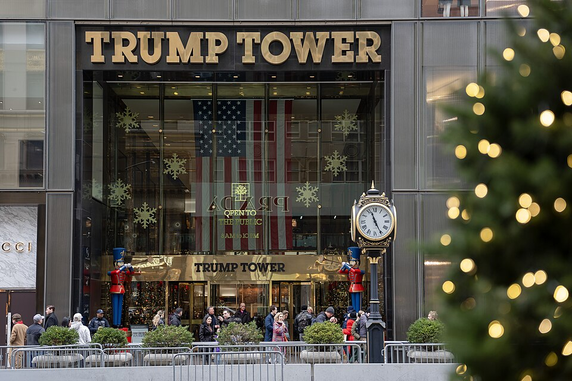
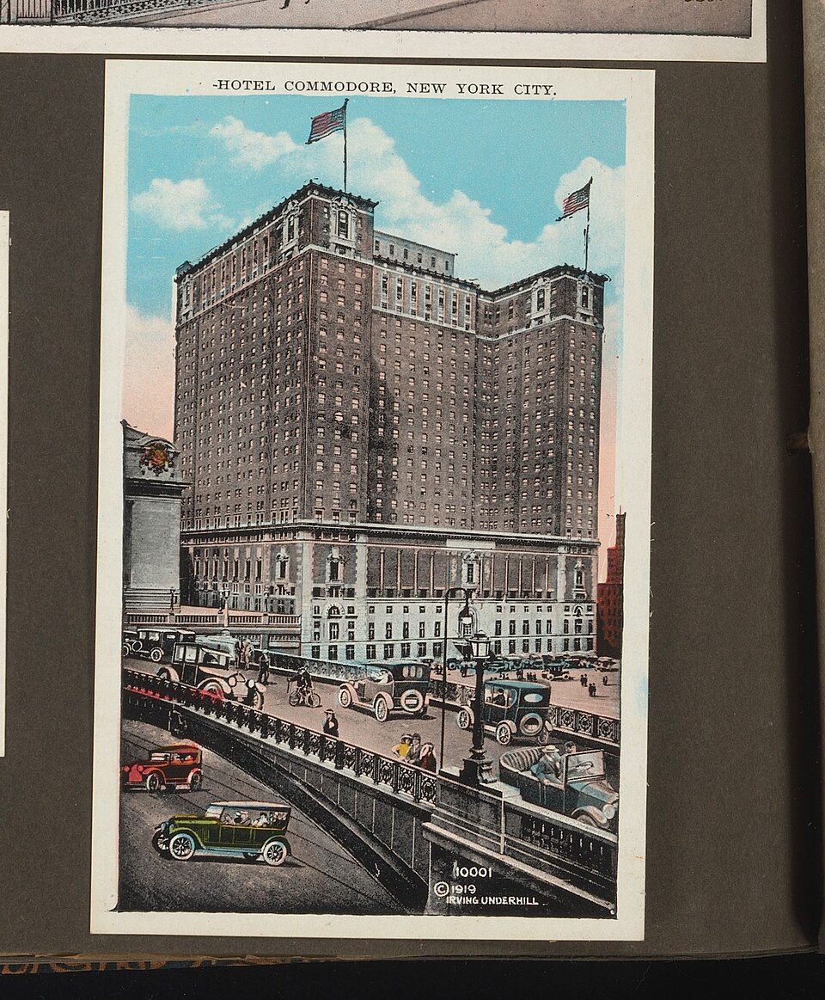
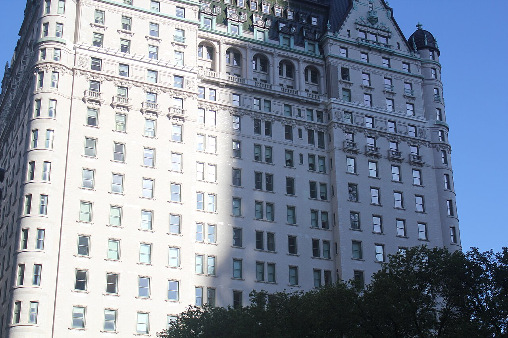
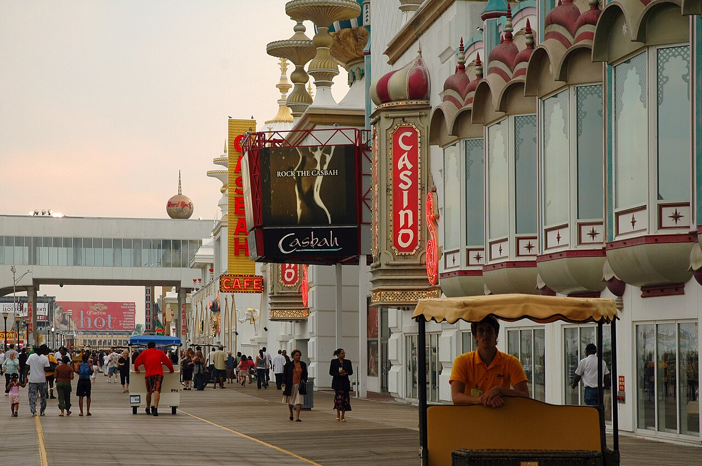

卷·02 · 商业帝国交易的艺术，与账单的算术
君悦、大厦、广场、泰姬陵、快船——一节一笔的大交易特辑；以及如实入账的四次 Chapter 11。楼与名字，互为杠杆。
这一卷只讲生意。帝国的骨架是两样东西：楼——他亲自监工、反复打磨的实体资产；名字——镀金色的大写 TRUMP，从楼牌蔓延到领带、牛排、大学和航空公司。楼给名字背书，名字给楼抬价，杠杆越拉越长。长到 1990 年代初，它开始断裂的声音清晰可闻。
读完这卷你会看到：他真正无可争议的天赋，是在财务的悬崖边上，一次又一次把"唐纳德·特朗普"这个品牌完好无损地拎出来。

帝国第一块跳板。25 岁接管公司后，他盯上中央车站旁半死的 Commodore 酒店：拉来凯悦集团入伙，与濒临财政危机的纽约市政府谈判，签下长约（一说 42 年）并争取到税收减免。1980 年，铜色幕墙的君悦酒店开业。
双写：支持者视之为化腐朽为神奇的都市更新样本；批评者则指出，减税与租约条款等于公共补贴私人开发商——这笔交易日后被反复拿出来检讨。但无论哪种说法都同意：从这栋楼开始，"特朗普"三个字站上了曼哈顿的门面。
帝国的心脏。68 层黑玻璃与金色大理石的混合体，1983 年在第五大道 725 号落成，中庭有瀑布，扶梯旁是名店。它不只是资产，更是摄像机最爱的取景地——《交易的艺术》封面、名人出没地、2015 年参选宣言的扶梯，全在这里。
大厦确立了他此后的商业语法：楼要能上镜，名字必须最大。

1988 年，他以约 4.075 亿美元买下中央公园南缘的地标广场酒店（Plaza Hotel）。这是帝国杠杆最重的一笔：买价高企，翻修再烧钱，遇上 1990 年地产行业转冷，很快还不上钱。1992 年，广场酒店进入重组——那串 Chapter 11 台账上的第二行。
后来他把广场酒店的大部分股权交给了债权人。这栋楼教会市场一件事：他的算术里，收购价从来不是问题——问题永远是下一笔现金流。
帝国版图里最短命的一块。1989 年，他以约 3.65 亿美元接手东方航空的东北穿梭航线，改名特朗普快船（Trump Shuttle），一队波音 727 喷着 TRUMP 字样往返纽约-波士顿-华盛顿。
航空业从来不原谅新手：油价、竞争、债务一起压上来，公司从未盈利，1990 年 9 月连 110 万美元的利息都未能支付，债权银行接管。1992 年 4 月 12 日，航线易主改挂 USAir Shuttle——特朗普快船存在了不到三年。

大西洋城的巅峰豪赌：造价约 12 亿美元的泰姬陵赌场 1990 年开业，新泽西州最高建筑、当时号称世界最大赌场。开局风光，账目惊心——开业当年年底，公司就未能偿付一笔 5000 万美元的债券利息。
1991 年，泰姬陵进入破产重组，债券持有人拿走了约一半股权。他曾用赌场大厅里那盏巨型吊灯比喻自己的野心；债权人的账本上，它是负债的代名词。
如实入账，一行不删：
1991 年——泰姬陵与城堡赌场重组；1992 年——广场酒店等重组；2004 年——Trump Hotels & Casino Resorts（THCR）重组；2009 年——Trump Entertainment Resorts 重组。
背景数字：90 年代初，他个人担保的企业债务约 9 亿美元，企业总债约 35 亿。必须写清楚的是：四次均为公司层面的破产重组，他本人从未申请个人破产。批评者的版本：债权人、投资人和小承包商为过度扩张买了单，他靠游戏规则保住身家；他的版本：这是商业世界的常规操作，"伟大的谈判者懂得何时重新谈牌"。值得记录的是这个循环本身——每一次都由债主接盘，每一次他又买回经营权和名字使用权。重组从灾难变成了商业模式，四次之后，连华尔街都见怪不怪。
可以核实的结局是：每一轮重组他都失去了股权与控制权，但几乎每一轮都保住了"特朗普"这个名字的使用权。名字，才是他真正的净资产。
90 年代银行对他关上大门之后，帝国完成了一次静悄悄的转身：从"借钱盖楼"变成"出借名字"——品牌授权（大厦冠名、连锁、消费品）与高尔夫球场成为新支柱。楼可以易主，品牌始终在他手里。这也是为什么四次 Chapter 11 之后，"TRUMP"的字样不减反增。
理解了这一点，就理解了后面所有卷的钥匙：他的生意，终究是注意力生意。——而下一卷（卷·03 舞台），讲的就是他把这门生意搬进千家万户电视机的故事。
破产重组年代的真正答案，写在草地上。2012 年 6 月，他以约 1.5 亿美元买下迈阿密 700 房间的多拉度假村（Trump National Doral）；2014 年 4 月，再以约 6500 万美元从迪拜资本手中买下苏格兰坦伯利度假村（Turnberry）——那座球场的阿里萨球场办过四届英国公开赛。此后十余年，"Trump Golf"扩展为横跨美欧的球场网络——2025 年媒体的口径在 15 至 17 座之间（Golfweek 计 15 座、部分媒体计 16-17 座，含苏格兰坦伯利与阿伯丁、爱尔兰杜贝格、迈阿密多拉与迪拜等地），各家清点口径不一，如实并陈——另有两座新球场在建或刚开业，媒体预期总数将达 18 座。球场还有一层隐性的账：会员费、球赛转播、政要合影与家族成员的常年出镜，把"度假村"经营成了品牌教堂。
高尔夫生意的妙处在于：它不靠杠杆豪赌，靠的是会员制现金流与"在自家球场招待政要"的注意力红利——从安倍晋三到各国政要的挥杆合影，让球场成了第二间椭圆形办公室。帝国最值钱的资产清单上，楼之外，绿地越来越重。其中多拉的"蓝魔"球场，多年充当美巡赛旗舰赛事的东家；坦伯利则在易主两年后重新办起了英国公开赛。而这些产业的纸面价值，最终都汇进了两份文书：2015 年自称身家逾百亿的首次财务披露，与后来被纽约州法院认定连年虚增的年度报表——绿地越铺越大的同一时期，报表数字的水分也在积累（原文与判罚见卷·12 白纸黑字）。
帝国的溢出效应也写进了流行文化：1992 年《小鬼当家2》在他自家的广场酒店取景，本人出镜给小主角指路——影史最著名的老板客串之一。货架上的名字生意则喜忧参半：伏特加（2005）、牛排（2007，经 Sharper Image 目录发售）、瓶装水、杂志接连上柜又接连下架。批评者把这些当作"品牌滥发的证据"；他的说法是"试错本来就是生意的一部分"。货架会说话：能留下来的，只有注意力本身——以及那栋每天在第五大道闪着金光的大厦。
把五笔交易的终点连成线，会发现一个安静的结论：他失去的是股权，留下的是矗立——君悦与大厦的年年在亮灯，广场酒店几经易手仍是中央公园南的地标；泰姬陵是唯一的例外，2016 年关门的它连名字都被从木栈道上拆下，原址改挂了别的招牌。帝国会计学到最后只剩一道题：什么才是你真正带得走的东西？他的答案从来只有一个字：名。
买下广场酒店那年，他把这栋楼交给时任妻子伊万娜·特朗普执掌经营——她成了纽约酒店业一时的风云人物，翻修工程与宴会生意都打出她的名字。这段"夫妻共治帝国"的插曲，也是两人婚姻最后的高光：1990 年代初的婚变官司登上小报头版的频率，不比他的赌场财报低。帝国的家庭叙事，从这里开始出现第一道裂缝。
参见：12 白纸黑字（财务文书与判罚）· 13 书页间（《交易的艺术》原章）· 18 数字卷（行政令逐年）。
下期预告 · 卷·03《舞台》：《交易的艺术》、The Apprentice 与 "You're fired!"——摄像机如何把地产商造成全国名人。